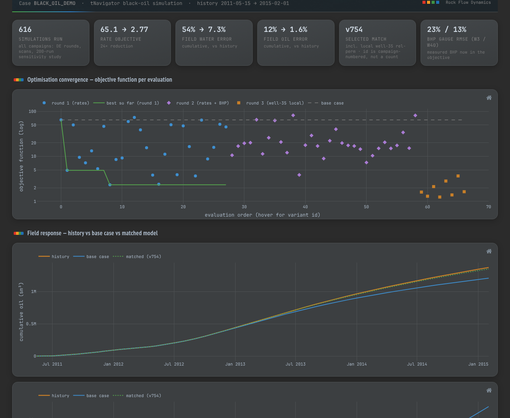
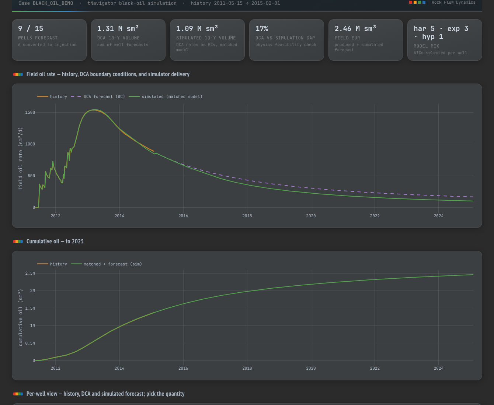

Assisted history matching and decline-curve forecasting of the BLACK_OIL_DEMO field model, executed end-to-end by an AI agent connected to tNavigator through the Local MCP Server. The engineer supervised each step and made the final decisions; the agent ran the models, the diagnostics and produced this report.
Differential-evolution history matching with a 200-run sensitivity screening, per-well segmented decline-curve analysis, and a 10-year production forecast cross-checked against the matched simulation model.
tNavigator BLACK_OIL_DEMO tutorial model (synthetic), history 2011-05-15 to 2015-02-01, 15 producers. tNavigator 26.2 with the Local MCP Server; AI agent driving the full workflow API.
The agent began with rate matching, which produced a convincing first result — until measured bottom-hole pressure exposed it as a false optimum. Skins, permeability corridors and completion hypotheses were then evaluated individually, a 200-run sensitivity study identified the influential parameters, and differential evolution converged on the final match with BHP included in the objective.
| Indicator | Before | After |
|---|---|---|
| Objective function | 65.1 | 2.77 |
| Cumulative field water error | 54% | 7.3% |
| Cumulative field oil error | 12% | 1.6% |
| BHP gauge RMSE (W3 / W40) | — | 23% / 13% |
| Selected match | — | v754 |

Per-well decline-curve analysis was performed on the matched model, with one Arps fit per decline cycle and AICc-based model selection (harmonic, exponential and hyperbolic mixes). Nine of fifteen wells qualified for forecasting; the remainder had converted to injection. The DCA forecast was then cross-checked against the simulation forecast as a physics feasibility check.
| Forecast indicator | Value |
|---|---|
| Wells forecast | 9 / 15 |
| DCA 10-year volume | 1.31 M sm³ |
| Simulated 10-year volume | 1.09 M sm³ |
| DCA vs simulation gap | 17% |
| Field EUR (produced + forecast) | 2.46 M sm³ |

Connect. An AI agent connects to tNavigator through the Local MCP Server — one installer component, launched from the GUI.
Execute. The agent plans and runs the study — decks, 616 simulation runs, sensitivity screening, DCA — through the tNavigator workflow API.
Supervise. The engineer reviews diagnostics at every step, redirects the methodology, and signs off the final match and forecast.
Report. The agent generates interactive dashboards and this document automatically — in your corporate template, ready to share.
The interactive dashboards behind Figures 1 and 2 are published online — open them during the presentation or afterwards: